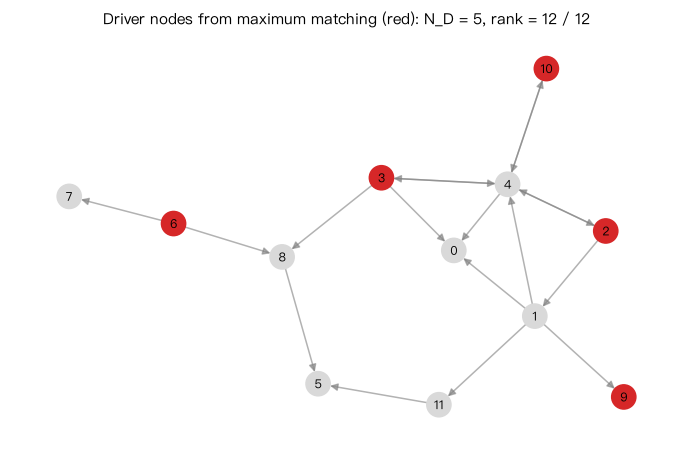
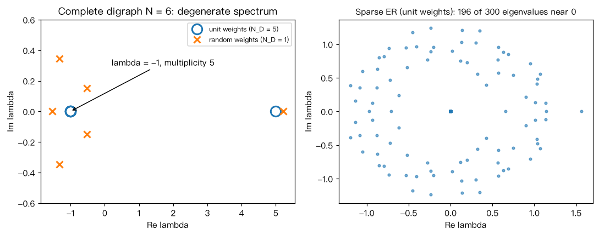
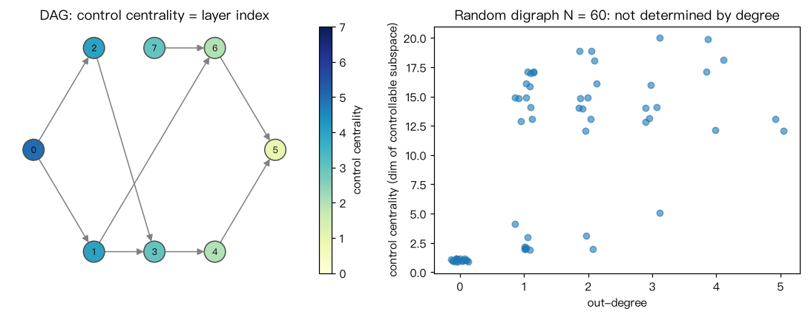
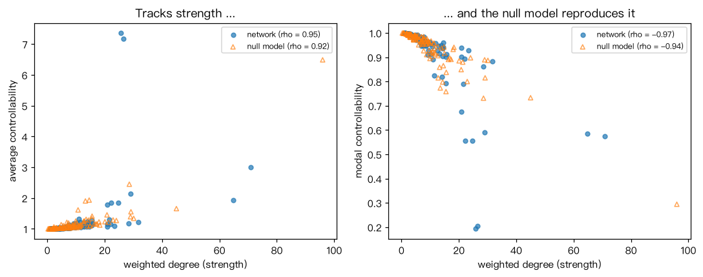
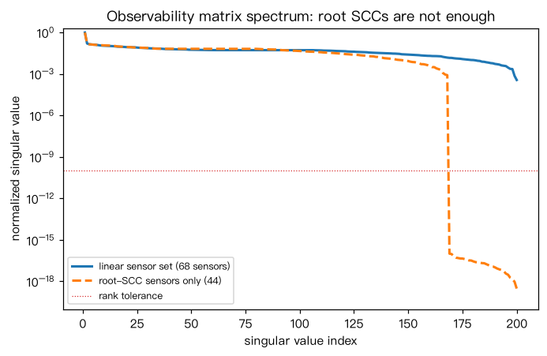
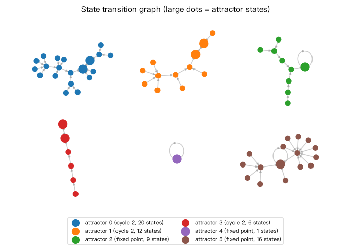
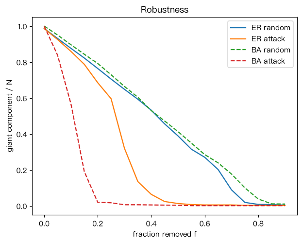

网络可控性与稳定性
研究需要从哪些节点施加输入才能控制或观测网络状态、代价多大，以及网络在扰动下能否维持功能。
传播与同步描述的是网络上“会自己发生”的动力学（见网络上的传播与免疫、同步与协同动力学）。网络控制换一个角度提问：如果我们想让网络进入某个目标状态，最少要从哪些节点施加外部输入？ 这就是网络的可控性（controllability）问题。对生物医学而言，它对应一个非常实际的问题——在一个基因调控网络或蛋白相互作用网络中，干预哪些分子（药物靶点）才能把细胞从疾病状态引导到健康状态？
与可控性对偶的是可观测性（observability）：只测量少数分子、脑区或症状，能否推断整个系统的内部状态？它决定了生物标志物的选择，也是任何反馈控制的前提。在“能不能控、能不能看”之外，还有三个同样重要的问题：代价多大（控制能量）、只想控制一部分节点时怎么办（目标控制）、系统是非线性、多稳态时怎么办（反馈顶点集控制与布尔网络控制）。Liu 与 Barabási（2016）的综述 Control principles of complex systems 按这条线索组织了该领域，本专题的结构与之大体对应。
本专题还讨论扰动下网络能否维持功能，并区分动力学稳定性（状态受扰后能否回到平衡）与结构鲁棒性（删去节点或边后是否仍连通）；后者的渗流理论与级联失效在网络鲁棒性、渗流与级联失效中系统展开，本专题只保留与控制相关的要点。
知识页面依次为：动态系统与网络控制的基本表述 → 线性系统的可控性（Kalman 与 PBH 判据、可控性 Gramian）→ 结构可控性与最大匹配（含精确可控性）→ 驱动节点与网络结构 → 控制中心性与可控子空间 → 控制能量与 Gramian 的数值问题 → 目标控制与部分可控 → 可观测性与观测节点 → 非线性网络的控制 → 脑网络控制：平均与模态可控性 → 驱动节点的枚举、分类与自适应控制 → 结构鲁棒性 → 动力学稳定性。所需背景包括网络结构指标与随机图中的有向图与度分布、网络上的传播与免疫中的 与渗流，以及同步与协同动力学中的特征值与线性化思路。
Contents知识页面
VIDEO讲解视频
文字稿
我们先看细胞里的一小段调控网络。上面这个是转录因子——一种开关蛋白，能调控别的基因。它同时调控着下面两个基因。 画面是转录过程的动画：基因上的信息，被一段段抄写下来，再去指导蛋白质的合成。 我们想把细胞从疾病状态推回健康状态：让左边的基因升高，右边的基因降低。绿色虚线，就是目标。 直觉上，应该抓住连接最多的那个节点。我们就在转录因子上，施加一个外部输入，也就是这个红色箭头。 可无论输入怎么变，两个基因总是同涨同落，永远到不了目标。 所以，控制一个网络，开关的数目和位置都有讲究。这一期，我们就把这件事讲清楚。 这一期分三部分来讲。 第一部分，什么叫可控，怎样判断。 第二部分，怎样只看网络结构，找出最少需要的开关。 第三部分，控制要付出多大代价，以及两种不同的稳定。 先看第一部分。我们把网络写成一个线性方程。x 是所有节点的状态，A 描述节点之间谁影响谁，B 说明外部输入加在哪些节点上。 等号左边，是状态变化的速度。它由两部分组成：网络内部的相互影响，加上外部的输入。 如果能把系统从任意状态，推到任意目标状态，就说它是可控的。直接接收输入的节点，叫驱动节点。 先看一条链：输入推动第一个节点，它再推第二个，第二个再推第三个。下面三根柱子，是三个节点的状态，它们可以各自摆到不同的位置。一个输入就够了。 再看星形：两个下游节点，收到的是同一个信号的不同倍数。右边的柱子里，第三根永远是第二根的两倍，状态被锁在一个平面里。 卡尔曼判据把这件事写成矩阵：把 B、A 乘 B、A 的平方乘 B 依次排开，排出的矩阵满秩，就可控。 秩，可以理解成这个矩阵里有几个真正独立的方向。星形这里，第三列全是零，秩只有二，比节点数三少，所以不可控。 可真实生物网络的权重常常未知，网络一大，这个计算也很难做。 下面进入第二部分。2011年，《自然》杂志上的一项研究给出了一个漂亮的办法：只看网络的连接结构，把找驱动节点变成一个匹配问题。 匹配，是一组有向边，任意两条既不共享起点，也不共享终点。黄色这两条可以同时选；红色这条和上面那条共享起点，就不行。 边数最多的匹配，叫最大匹配，就是这些黄色的边。被匹配边指向的节点，叫匹配节点，涂成了蓝色。 没有被匹配的节点，涂成红色，就是必须直接施加输入的驱动节点。 右边的式子说：驱动节点数，等于节点总数，减去最大匹配的边数。这里九个节点，七条匹配边，所以需要两个驱动节点。 每条匹配边，是控制信号传递链上的一环。网络被拆成几条互不相交的路径，每条路径的起点，都需要一个输入。 回到星形：中心只能匹配一个下游，另一个下游只能单独驱动，所以一共需要两个输入。 这个方法带来了几个反直觉的结论。第一，驱动节点往往不是枢纽，也就是连接最多的节点。红色是驱动节点，画了黄圈的是枢纽。 在一千个节点的无标度网络上，驱动节点平均只有三条左右的连接，而全网平均是六条。 因为一个枢纽虽然能影响很多下游，却只能和其中一个匹配。剩下的下游，都得另找输入。 第二，网络越稀疏，越难控制。这张图，横轴是平均连接数，纵轴是驱动节点的比例。在随机网络里，平均连接数一增加，驱动节点的比例就迅速下降。 第三，连接越不均匀，越难控制。平均连接数同样是三，无标度网络需要的驱动节点，是随机网络的好几倍。 基因调控网络里，许多靶基因只接受调控，不调控别人，所以需要的驱动节点比例相对较高。 还有一个细节：最大匹配往往不唯一。 换一种匹配，驱动节点就换了一批，但数目始终不变，右上角一直是二。 于是，一个节点在所有可能的方案里扮演什么角色，就成了后续研究的问题。研究者提出了输入图和交换定理，不用一一列举，就能找出所有可能的驱动节点。 进一步，把控制方案看成一组控制路径。有些节点，在任何方案里都位于路径中间，负责传递信号——它们叫控制核心点，就是黄色的这些。 在一张七千多个基因的调控网络里，一个控制方案就要四成多的基因作驱动，所有方案合起来超过七成，而控制核心点不到一成。 候选少得多，更适合作为药物靶点的筛选起点。当然，这些都是计算预测，还需要实验验证。 最后是第三部分。理论上可控，不代表实际上容易控制。 这张小网络，只在一个节点上施加输入，系统依然可控。我们来算一算，把状态推向不同方向，各需要多少能量。 右边每根柱子，代表一个方向的可达程度，越往下越难推动。纵轴是对数刻度，标出的每一档，相差一万倍。 最容易推动的方向和最难推动的方向，所需能量相差十个数量级以上。 脑网络研究也遇到了这个问题：单个脑区理论上能控制全脑，但所需的能量大到几乎不可能实现。 对大脑施加输入，临床上的一种方式是深部脑刺激：把电极植入脑内，用电脉冲刺激特定的区域。 下面要区分两种稳定。第一种叫结构鲁棒性：删掉一些节点以后，网络还连不连通。灰色的是被切断的碎片。 第二种叫动力学稳定性：状态受到小扰动以后，能不能回到原来的平衡。就像碗底的小球，推一下，它还会滚回来。 1972年，生态学家梅研究了随机构造的大系统。判断是否稳定，要看描述这个系统的雅可比矩阵，它的特征值是否都落在虚轴左边。 这张图是复平面，横轴是特征值的实部，纵轴是虚部。红线是虚轴，左边的绿色区域代表稳定。 物种少、连接稀的时候，这些黄点，也就是特征值，都在左边，系统稳定。 规模越大、连接越密，这团特征值散得越开。一旦越过虚轴，变成红色，系统就失稳了。 梅给出的条件写在右下角：相互作用的强度，乘以物种数和连接概率乘积的平方根，要小于一。 真实的生物系统并非随机构造。它们靠模块化、冗余和负反馈，在复杂中保持了稳定。 好，我们来总结一下。 第一，结构可控性只看连接结构，最大匹配之外的节点，就是驱动节点。 第二，驱动节点往往避开枢纽，稀疏而不均匀的网络更难控制。 第三，可控不等于容易控制；结构鲁棒和动力学稳定，也要分开来看。 这个专题的知识页面里，有画面上的这个交互演示。滑块调的是平均出度，也就是平均每个节点指出去几条边。 平均出度小的时候，红色的驱动节点很多；连接变密以后，驱动节点就少了。
INTERACTIVE交互可视化
CODE计算实现
12 个完整可运行的 Python 示例，每个都给出代码、输出图和解读；可在浏览器中直接运行，或下载 Jupyter Notebook · Python 脚本 · 在 JupyterLite 中打开 ↗。
 用 Kalman 秩判据检验可控性
用 Kalman 秩判据检验可控性
用最大匹配找驱动节点，并用 Kalman 判据验证 驱动节点比例与平均度、度异质性
驱动节点比例与平均度、度异质性
PBH 判据与精确可控性——同一拓扑、不同权重需要的输入数不同
控制中心性——单个节点能控制的子空间维数 目标控制——只控制一部分节点需要多少驱动节点
目标控制——只控制一部分节点需要多少驱动节点 控制能量、Gramian 条件数与“理论可控、数值不可控”
控制能量、Gramian 条件数与“理论可控、数值不可控”
平均可控性与模态可控性（Gu 等 2015 的离散时间定义）及其与度的关系
可观测性——根强连通分支与最少观测节点 反馈顶点集控制——锁定少数节点把非线性网络推向指定吸引子
反馈顶点集控制——锁定少数节点把非线性网络推向指定吸引子
布尔网络的吸引子与最小钉扎控制集（穷举）
随机失效与蓄意攻击下的结构鲁棒性Practice自测、练习与案例
Papers论文精读
论随机图的演化
On the evolution of random graphs
Erdős P, Rényi A
让随机图的边数逐渐增加，系统刻画各种结构在何时“突然”出现，发现巨连通分支在平均度为 1 处涌现。
复杂网络对随机故障与蓄意攻击的耐受性
Error and attack tolerance of complex networks
Albert R, Jeong H, Barabási A-L
比较随机图与无标度网络在随机删点和按度删点下的直径与碎裂过程，发现无标度网络“耐随机故障、怕蓄意攻击”。
蛋白质网络中的致死性与中心性
Lethality and centrality in protein networks
Jeong H, Mason SP, Barabási A-L, Oltvai ZN
在酵母蛋白质相互作用网络中发现度分布重尾，且度越高的蛋白敲除后越可能致死，提出“致死性–中心性”关系。
计算机网络与人群的高效免疫策略
Efficient immunization strategies for computer networks and populations
Cohen R, Havlin S, ben-Avraham D
提出“随机选人、给他随机提名的熟人接种”的熟人免疫策略，不需全局信息即可大幅降低阻断流行所需的接种比例。
相互依存网络中的灾难性级联失效
Catastrophic cascade of failures in interdependent networks
Buldyrev SV, Parshani R, Paul G, Stanley HE, Havlin S
两个相互依赖的网络中，失效会来回传递并引发突变式崩溃；与单一网络相反，度分布越宽，相互依存网络越脆弱。
复杂网络的可控性
Controllability of complex networks
Liu Y-Y, Slotine J-J, Barabási A-L
把结构可控性转化为最大匹配，算出最少驱动节点数，发现其主要由度分布决定，且驱动节点倾向于避开枢纽。
人类连接组的富人俱乐部组织
Rich-club organization of the human connectome
van den Heuvel MP, Sporns O
在 21 人结构网络中发现 12 个双侧枢纽互连远超随机预期，构成承担全局通信的富人俱乐部。
网络分析：理解精神病理结构的整合性方法
Network analysis: an integrative approach to the structure of psychopathology
Borsboom D, Cramer AOJ
系统阐述把精神障碍看作症状之间因果相互作用的网络观点，综述症状网络的构建、分析和模拟方法及其临床意义。
结构脑网络的可控性
Controllability of structural brain networks
Gu S, Pasqualetti F, Cieslak M, Telesford QK, Yu AB, Kahn AE, et al.
把线性控制理论用于人脑结构网络，提出平均、模态、边界三种区域可控性及其系统分布。
网络控制原理预测秀丽隐杆线虫连接组中的神经元功能
Network control principles predict neuron function in the Caenorhabditis elegans connectome
Yan G, Vértes PE, Towlson EK, Chew YL, Walker DS, Schafer WR, et al.
用目标可控性分析线虫连接组，预测运动控制所需的神经元，并以单神经元消融实验验证 PDB 与 DD04/DD05。
输入图：控制复杂网络的隐藏几何结构
Input graph: the hidden geometry in controlling complex networks
Zhang X, Lv T, Pu Y
用"控制邻接"构造输入图，证明交换定理并把节点控制类型归结为输入图的连通分支，解释了稠密网络的控制双峰现象。
寻找控制复杂网络的全部可能输入节点的高效算法
An efficient algorithm for finding all possible input nodes for controlling complex networks
Zhang X, Han J, Zhang W
证明只需一个最大匹配及其交替路径即可找出全部可能输入节点，把复杂度降到与最大匹配相同，并输出每个输入节点的替代节点集。
癌症维持基因作为治疗靶点
Cancer-keeper genes as therapeutic targets
Zhang X, Pan C, Wei X, Yu M, Liu S, An J, et al.
提出在所有控制方案中都处于控制路径中间的控制枢纽，用作癌症维持基因，并在膀胱癌细胞和小鼠模型中检验部分候选。
精神病理学网络分析中的模块控制
Module control of network analysis in psychopathology
Pan C, Zhang Q, Zhu Y, Kong S, Liu J, Zhang C, et al.
用最小支配集在模块尺度分析症状网络的控制关系，发现 2773 名大学新生中睡眠、压力模块结构上控制情绪模块。
动态网络的自适应控制
Adaptive Control of Dynamic Networks
Pan C, Zhang X, Zheng H, Zhang Y, Su Z, Zhang C, et al.
在只知道历史拓扑的条件下，为动态网络每个快照实时选取驱动节点，并使前后驱动节点尽量一致以降低切换代价。
语言模型的稀疏内部控制
Sparse Internal Control of Language Models
Zhang X
把目标控制的思想用到冻结语言模型内部：选少数内部站点做推理时干预来驱动目标行为，并用六轴协议区分哪些控制性质成立。
References核心文献
Liu、Slotine 与 Barabási 2011：Controllability of complex networks（Nature）
- 背景：控制论的可控性判据难以用于规模大、权重未知的真实网络。
- 核心发现：把结构可控性问题转化为最大匹配问题，给出最小输入定理；在多类真实网络中，驱动节点比例主要由度分布决定，稀疏和异质网络需要更多驱动节点，驱动节点倾向于避开枢纽。
- 阅读要点：理解有向图匹配与二分图匹配的对应；注意论文讨论的是线性动力学下“控制到任意状态”，对非线性生物系统的含义要谨慎。重点看图 1（匹配与驱动节点示意）和图 3（ 与度分布的关系）。
- 延伸思考：给一个基因调控网络增加若干条“自调控”环（自环），驱动节点数会怎样变化？为什么？
DOI：10.1038/nature10011；精读：Liu 2011
Albert、Jeong 与 Barabási 2000：Error and attack tolerance of complex networks（Nature）
- 背景：互联网、万维网等系统在大量组件随机故障下仍能工作，原因是什么？
- 核心发现：无标度网络对随机删点高度鲁棒，对按度攻击极其脆弱；ER 网络对两者表现相近。
- 阅读要点：区分巨分支比例与平均路径长度两种鲁棒性指标；注意攻击策略中“按初始度排序”与“每删一个节点重新计算度”的差别。
- 延伸思考：在蛋白相互作用网络中，“随机失效”和“蓄意攻击”分别对应什么生物学过程（突变、药物、病原体）？
DOI：10.1038/35019019；精读：Albert 2000
Yan 等 2017：Network control principles predict neuron function in the Caenorhabditis elegans connectome（Nature）
- 背景：网络可控性的预测很少在真实生物系统中得到实验检验。
- 核心发现：基于线虫连接组的结构可控性分析，预测控制运动行为所需的神经元；消融实验验证了部分预测，并发现了此前未知其运动功能的神经元。
- 阅读要点：作者使用的是“目标可控性”（只控制与运动相关的肌肉），而非控制全部节点——这是把理论用于生物问题时很关键的调整。
- 延伸思考：如果把这一思路用于一个疾病相关的基因调控网络，“目标节点”应选什么？需要哪些实验来验证？
DOI：10.1038/nature24056；精读：Yan 2017
Liu 与 Barabási 2016：Control principles of complex systems（Reviews of Modern Physics）
- 背景：2011 年后网络控制研究迅速增长，涉及结构可控性、控制能量、可观测性、非线性控制与集体行为控制，概念与假设各不相同。
- 核心内容：系统梳理线性系统的可控性（Kalman 判据、结构可控性、最小输入问题、节点与边的角色、控制中心性、边动力学、自身动力学、控制能量）、非线性系统的可控性（可达性、线性化的局限、布尔网络）、可观测性（最少观测节点、目标可观测性、观测器设计、参数辨识与网络重建）、走向期望终态的方法（混沌控制、补偿扰动、反馈顶点集），以及同步与群集等集体行为的控制。
- 阅读要点：本专题的页面大体对应其第 II（线性）、III（非线性）、IV（可观测性）、V.D（反馈顶点集）节；第 VII 节的展望（稳定性、自适应网络、网络之网络、噪声）适合作为研究选题的起点。
- 延伸思考：综述中哪些结论依赖“参数相互独立”的结构假设？在你关心的生物网络中，这一假设是否合理？
DOI：10.1103/RevModPhys.88.035006；开放版本：arXiv:1508.05384
Gu 等 2015：Controllability of structural brain networks（Nature Communications）
- 背景：结构连接组是否决定了不同脑区在驱动脑状态转换中的分工？
- 核心发现：以弥散成像得到的结构连接为耦合矩阵，提出平均、模态与边界可控性；单个区域理论上可控全脑但能量极大；平均与模态可控性分别与加权度强正相关、强负相关，并分别富集于默认模式系统与认知控制系统。
- 阅读要点：注意归一化方式与离散时间模型；把结果与 Tu 等（2018）的质疑和 Pasqualetti 等（2019）的回应对照阅读。
- 延伸思考：如果平均可控性与加权度的相关接近 1，它还提供了哪些度之外的信息？如何设计检验？
DOI：10.1038/ncomms9414；精读：Gu 2015
Gao、Liu、D’Souza 与 Barabási 2014：Target control of complex networks（Nature Communications）
- 背景：控制整个网络既不可行也不必要，实际问题往往只涉及一部分节点。
- 核心发现：全控制的驱动节点集合高估了目标控制所需；提出 k-walk 理论（有向树中，到各目标路径长度互不相同时一个节点即可控制它们）和多输入的贪心算法；度异质网络在平均度较大时目标控制效率更高。
- 阅读要点：区分随机目标与局部目标两种方案；注意贪心算法给出的是近似解。
- 延伸思考：在一个疾病相关信号通路中，你会把哪些分子设为目标？非目标节点的状态需要约束吗？
Liu、Slotine 与 Barabási 2013：Observability of complex systems（PNAS）
- 背景：细胞内变量不可能全部测量，能否从少数可测变量重建整个系统的状态？
- 核心发现：用推断图与强连通分支分解给出最少观测节点的必要条件（每个根 SCC 至少一个）；在生化反应系统中，这些观测节点不仅必要而且充分；并给出目标可观测性的观测节点选择方法，服务于生物标志物设计。
- 阅读要点：理解推断图的方向（与影响图相反）；比较线性系统中必要观测集与充分观测集的差异。
- 延伸思考：一个临床生物标志物面板在网络中应满足什么结构条件，才能推断不可直接测量的致病分子？
Zañudo、Yang 与 Albert 2017：Structure-based control of complex networks with nonlinear dynamics（PNAS）
- 背景：结构可控性基于线性动力学，而生物网络是非线性、多稳态的。
- 核心发现：在反馈顶点集控制理论基础上加入源节点，得到不依赖具体函数形式与参数、能把系统引导到任一自然吸引子的控制集合；在多类真实网络上与结构可控性比较，二者所需节点比例呈反向关系（基因调控网络中分别约 1%–18% 与 75%–96%）；在基因调控网络的动力学模型中检验了预测。
- 阅读要点：理解“控制到任意状态”与“控制到吸引子”的区别；注意 FVS 是对所有满足条件的动力学都充分的集合，具体模型可能需要更少节点。
- 延伸思考：如果只知道网络结构和两种细胞表型的表达谱，如何用 FVS 控制设计重编程策略？
其他文献（按主题）
- 精确可控性：Yuan Z, Zhao C, Di Z, Wang WX, Lai YC. Exact controllability of complex networks. Nature Communications 2013;4:2447. DOI
- 控制中心性：Liu YY, Slotine JJ, Barabási AL. Control centrality and hierarchical structure in complex networks. PLoS ONE 2012;7:e44459. DOI
- 控制轮廓：Ruths J, Ruths D. Control profiles of complex networks. Science 2014;343:1373–1376. DOI
- 边动力学：Nepusz T, Vicsek T. Controlling edge dynamics in complex networks. Nature Physics 2012;8:568–573. DOI
- 控制能量：Yan G 等. Controlling complex networks: how much energy is needed? Physical Review Letters 2012;108:218703. DOI；Yan G 等. Spectrum of controlling and observing complex networks. Nature Physics 2015;11:779–786. DOI
- Gramian 度量与数值问题：Pasqualetti F, Zampieri S, Bullo F. Controllability metrics, limitations and algorithms for complex networks. IEEE Transactions on Control of Network Systems 2014;1:40–52. DOI；Sun J, Motter AE. Controllability transition and nonlocality in network control. Physical Review Letters 2013;110:208701. DOI
- 反馈顶点集控制：Fiedler B 等. Dynamics and control at feedback vertex sets. I. Journal of Dynamics and Differential Equations 2013;25:563–604. DOI；Mochizuki A 等. Dynamics and control at feedback vertex sets. II. Journal of Theoretical Biology 2013;335:130–146. DOI
- 布尔网络与稳定基序：Akutsu T 等. Control of Boolean networks: hardness results and algorithms for tree structured networks. Journal of Theoretical Biology 2007;244:670–679. DOI；Zañudo JGT, Albert R. Cell fate reprogramming by control of intracellular network dynamics. PLoS Computational Biology 2015;11:e1004193. DOI；Murrugarra D 等. Identification of control targets in Boolean molecular network models via computational algebra. BMC Systems Biology 2016;10:94. DOI
- 生物医学应用：Vinayagam A 等. Controllability analysis of the directed human protein interaction network identifies disease genes and drug targets. PNAS 2016;113:4976–4981. DOI；Kanhaiya K 等. Controlling directed protein interaction networks in cancer. Scientific Reports 2017;7:10327. DOI
- 脑网络控制及其争议：Tu C 等. Warnings and caveats in brain controllability. NeuroImage 2018;176:83–91. DOI；Pasqualetti F 等. RE: Warnings and caveats in brain controllability. NeuroImage 2019;197:586–588. DOI；Karrer TM 等. A practical guide to methodological considerations in the controllability of structural brain networks. Journal of Neural Engineering 2020;17:026031. DOI；Kim JZ 等. Role of graph architecture in controlling dynamical networks with applications to neural systems. Nature Physics 2018;14:91–98. DOI；Gu S 等. Optimal trajectories of brain state transitions. NeuroImage 2017;148:305–317. DOI
Data & tools相关数据与软件
Further延伸资源
| 类型 | 资源 | 说明 |
|---|---|---|
| 教材 | Barabási《Network Science》第 8 章 Network Robustness（链接） | Molloy–Reed 判据、随机失效与攻击、级联失效、连续度近似；CC BY-NC-SA 2.0 |
| 讲义 | Liu 与 Barabási, Control principles of complex systems（arXiv 免费版；正式版 Rev Mod Phys 2016，DOI） | 网络控制最全面的综述，本专题结构的主要参照：先读第 II 节（线性与结构可控性、控制能量），再读第 IV 节（可观测性）与第 V.D 节（反馈顶点集） |
| 教材说明 | Barabási《Network Science》在线版没有单独的网络控制章节；可控性部分以上述综述为准，鲁棒性部分对应第 8 章 | 结构鲁棒性的系统内容见网络鲁棒性、渗流与级联失效 |
| 软件文档 | NetworkX 二分图匹配
networkx.algorithms.bipartite.hopcroft_karp_matching；SciPy
scipy.linalg.solve_continuous_lyapunov /
solve_discrete_lyapunov |
最大匹配求驱动节点、Lyapunov 方程求 Gramian 的标准实现，用法见代码示例 |
| 中文视频 | 陈关荣：复杂网络牵制控制及其能控性研究进展（B 站） | 中文的网络能控性系统报告，正式报告约在 13:38–1:27:00，以牵制控制为主 |
| 中文视频 | 单哥：复杂网络建模·网络鲁棒性（B 站，P54–P60） | 约 45 分钟，从渗流理论到随机与度攻击，含 Python 代码 |
| 英文视频 | Yang-Yu Liu：Controllability and Observability of Complex Systems（YouTube） | 结构可控性原作者之一的讲座，约 1 小时；需境外网络 |
| 交互演示 | NetLogo Web：Giant Component（链接） | 观察巨分支的出现，对应结构鲁棒性中的渗流 |
| 论文（生物医学） | Yan 等 2017, Network control principles predict neuron function in the C. elegans connectome, Nature（DOI） | 见核心文献，可控性预测的实验检验 |
| 论文（生物医学） | Gu 等 2015, Controllability of structural brain networks, Nature Communications（DOI） | 开放获取；平均可控性与模态可控性，衔接脑连接组；精读：Gu 2015 |
| 拓展（人工智能） | Sparse Internal Control of Language Models（NeurIPS 2026；代码） | 把“选少数驱动节点控制系统”的思想用到大语言模型内部：选择少量内部站点施加干预，并从可达、可反转、剂量响应、反馈、保持与复用六方面评价控制效果。见论文精读 |
提示：Barabási《Network Science》在线版需加载境外脚本，在中国大陆可能无法正常显示；标注“需境外网络”的为 YouTube 资源。
Open questions开放问题
- 选择一个你熟悉的生物医学网络（如某信号通路、某疾病的症状网络、某脑区回路）。如果要“控制”它，控制目标是什么——控制全部节点，还是只把少数关键节点推向健康状态？线性结构可控性的哪些假设在这个系统中不成立？
- 有研究提出“控制核心点”（在所有控制方案中都必须作为中间节点）可能比“驱动节点”更适合作为药物靶点候选。请从生物学和方法学两方面，各给出一条支持和一条质疑这一观点的理由，并设计一个可以检验它的分析或实验。
- 对一个已知动力学方程的代谢通路或信号通路模型，画出它的推断图并找出根强连通分支。临床上实际可测的分子是否覆盖了每个根强连通分支？如果没有，哪些不可测分子在原理上就无法从现有测量中推断？
- 同一个基因调控网络，用结构可控性（最大匹配）和反馈顶点集控制分别计算控制节点集合，两者的大小和成员可能相差很大。请说明两种框架在控制目标、动力学假设和控制动作上的差别，并讨论在“把肿瘤细胞推向凋亡表型”这一问题中应优先采用哪一种、还需要什么数据。